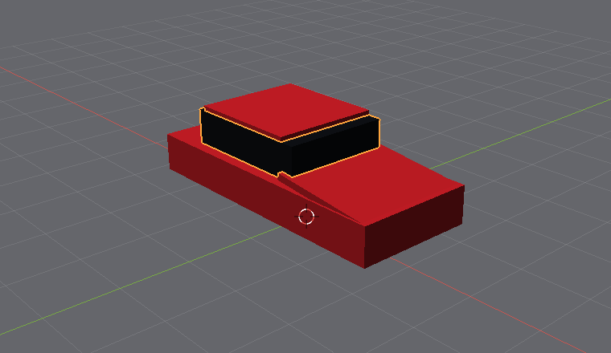

Now everything together: a red sports car on a road, built from the shapes in the Add menu. It takes about twenty minutes, over this chapter and the next.
The sample car, in the dots menu, is the same car made with meshes: a curved body, lathed tyres, rounded edges. Yours is built from boxes and cylinders, which is how every model starts - the blocks first, the curves later.
The road, the lamp, the sky and the camera come first, while the Outliner lists three names. The car will be twenty-five parts, more than the Outliner has room to show, and the ground and the lamp would fall off the end of the list.
5a5d62 into Base colour and 0.95 into Roughness.2e3034 into Second colour, and in Scale, bump type 28 into the first box and 0.002 into the second. That is asphalt: a fine grey grit, two millimetres deep.-4, -6, 9: high, behind the car and to our side of it, where it will put a highlight on the bonnet and lay the shadow towards us. In its Data tab: Power 5000, since it is eleven metres away, and Radius 1 for soft shadows.6f93c8, Horizon e3e8ee and Strength 0.9 - a clear afternoon.6.8, -6.0, 2.9. It keeps looking at the middle of the scene, where the car will be: in front of it, a little to the side, at about the height of a person.4.2, 1.8, 0.56 - four metres long, nearly two wide. Tab takes you from one box to the next.0, 0, 0.62, which lifts it off the road.0.12 into Roughness: a glossy red paint.1.6, 1.74, 0.1, the Location 1.25, 0, 0.93 and the Rotation 0, 6, 0 - the bonnet, tilted down to the front.1.7, 1.58, 0.08, Location -0.4, 0, 1.49, and Rotation all 0.2.0, 1.56, 0.5, Location -0.35, 0, 1.2. Make it tinted glass: Plastic, Base colour 0e1014, Roughness 0.04. A car's windows look dark and glossy from outside - you see the sky in them, not the seats.Click Rendered to see it lit: the paint shines and the windows show the sky. Then back to Solid while you work, which is quicker.

After step 12, in the Solid view: the body, the bonnet tilted to the front, the dark cabin and the roof.